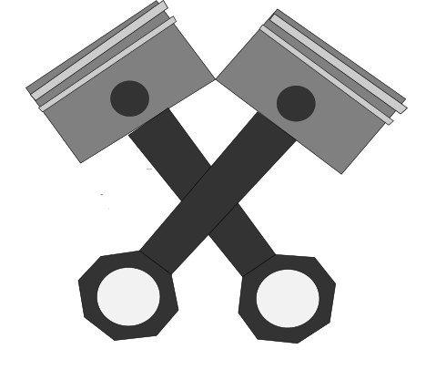

MOTORJI Z NOTRANJIM ZGOREVANJEM
Bencin in Dizel predstavljaka veliko večino pogonskih goriv na današnjem trgu. Oba pridobivamo iz surove nafte v refinarijah. Bencin ima največ molekul C7H12. Pomembno je, da je bencin odporen proti klenkanju oz. samovžigu. To je označeno z oktanami, pri čemer je več boljše (100 oktanski bencin se bo manjkrat samovžgal v primerjavi z 95).Včasih so klenkanje reševali z dodajanjem svinca v gorivo, a se je to izkazalo za zelo škodljivo.Pri dizelskih motorjih se svečka ne uporablja, temveč se zanašamo na samovžig mešanice dizla in zraka.
Tipična molekula v dizlu je C13H24.
[2]